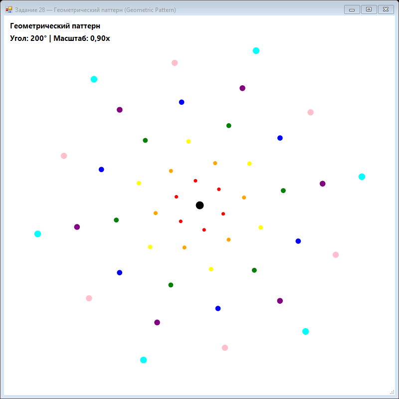
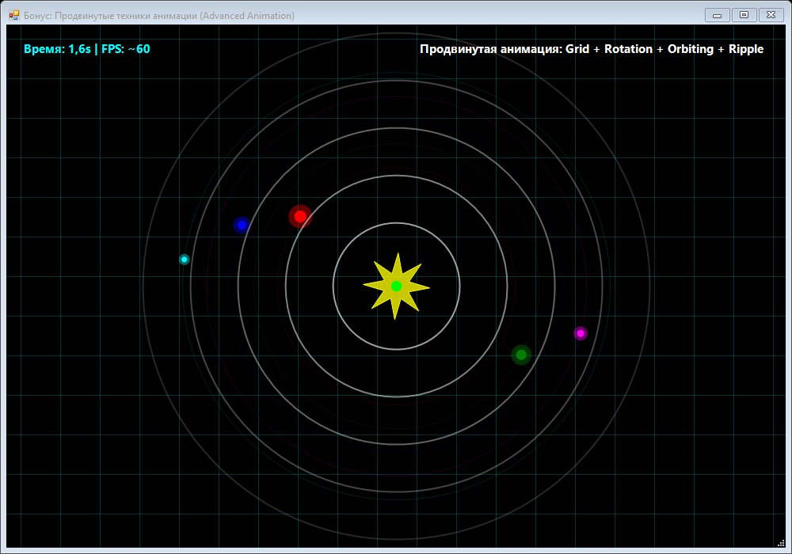

Урок 8.8: Геометрические шаблоны
Генерация узоров
Геометрические шаблоны создаются повторяющимися элементами, трансформированными с помощью вращения, масштабирования и смещения.
for (int layer = 0; layer < 8; layer++)
{
g.TranslateTransform(centerX, centerY);
g.RotateTransform(rotation + layer * 45);
for (int item = 0; item < 6; item++)
{
float angle = item * 360f / 6;
g.RotateTransform(angle);
g.FillEllipse(brush, 150, -10, 20, 20);
g.RotateTransform(-angle);
}
g.ResetTransform();
}
📝 Пример задания — геометрический узор
8 слоёв с вращающимися орбитами. Каждый слой пульсирует по масштабу через Math.Sin. Пульсация и вращение независимы для каждого слоя:
using System;
using System.Drawing;
using System.Drawing.Drawing2D;
using System.Windows.Forms;
namespace CSharpGraphicsApp
{
public class Task28_GeometricPattern : Form
{
private float rotationAngle = 0;
private float scaleValue = 1;
private readonly Timer timer = new Timer();
public Task28_GeometricPattern()
{
Text = "Задание 28 — Геометрический узор (Geometric Pattern)";
Size = new Size(800, 800);
BackColor = Color.White;
DoubleBuffered = true;
Paint += Form_Paint;
timer.Interval = 16;
timer.Tick += (s, e) =>
{
rotationAngle += 2f;
scaleValue = 1 + (float)Math.Sin(rotationAngle * Math.PI / 180) * 0.3f;
Invalidate();
};
timer.Start();
FormClosed += (s, e) => timer.Stop();
}
private void Form_Paint(object sender, PaintEventArgs e)
{
e.Graphics.SmoothingMode = SmoothingMode.AntiAlias;
e.Graphics.Clear(Color.White);
float cx = ClientSize.Width / 2f;
float cy = ClientSize.Height / 2f;
int layers = 8, itemsPerLayer = 6;
Color[] colors = { Color.Red, Color.Orange, Color.Yellow, Color.Green,
Color.Blue, Color.Purple, Color.Pink, Color.Cyan };
for (int layer = 0; layer < layers; layer++)
{
var state = e.Graphics.Save();
e.Graphics.TranslateTransform(cx, cy);
e.Graphics.RotateTransform(rotationAngle + layer * 30);
float baseRadius = 50 + layer * 40;
float scale = scaleValue * (0.8f + layer * 0.1f);
for (int i = 0; i < itemsPerLayer; i++)
{
float angle = (float)(i * 2 * Math.PI / itemsPerLayer);
float x = baseRadius * (float)Math.Cos(angle);
float y = baseRadius * (float)Math.Sin(angle);
float size = 10 * scale;
using (var brush = new SolidBrush(colors[layer % colors.Length]))
e.Graphics.FillEllipse(brush,
x - size / 2, y - size / 2, size, size);
}
e.Graphics.Restore(state);
}
e.Graphics.FillEllipse(Brushes.Black, cx - 8, cy - 8, 16, 16);
e.Graphics.DrawString(
$"Угол: {rotationAngle:F0}° | Масштаб: {scaleValue:F2}x",
new Font("Segoe UI", 11, FontStyle.Bold), Brushes.Black, 10, 10);
}
}
}📝 Бонус: комплексная анимация
Четыре независимых слоя на чёрном фоне: анимированная сетка, пульсирующая звезда в центре, орбитирующие «планеты» и расширяющиеся волны-риплы:
using System;
using System.Drawing;
using System.Drawing.Drawing2D;
using System.Windows.Forms;
namespace CSharpGraphicsApp
{
public class BonusAnimationTechniques : Form
{
private float time = 0;
private readonly Timer timer = new Timer();
public BonusAnimationTechniques()
{
Text = "Бонус: Продвинутые техники анимации (Advanced Animation)";
Size = new Size(1000, 700);
BackColor = Color.Black;
DoubleBuffered = true;
Paint += Form_Paint;
timer.Interval = 16;
timer.Tick += (s, e) => { time += 0.016f; Invalidate(); };
timer.Start();
FormClosed += (s, e) => timer.Stop();
}
private void Form_Paint(object sender, PaintEventArgs e)
{
e.Graphics.SmoothingMode = SmoothingMode.AntiAlias;
int w = ClientSize.Width, h = ClientSize.Height;
int cx = w / 2, cy = h / 2;
// 1. Анимированная сетка
int gs = 50, offset = (int)(time * 20) % gs;
using (var pen = new Pen(Color.FromArgb(50, Color.Cyan), 1))
{
for (int x = -offset; x < w; x += gs) e.Graphics.DrawLine(pen, x, 0, x, h);
for (int y = -offset; y < h; y += gs) e.Graphics.DrawLine(pen, 0, y, w, y);
}
// 2. Пульсирующая звезда
var st = e.Graphics.Save();
e.Graphics.TranslateTransform(cx, cy);
e.Graphics.RotateTransform(time * 30f);
float sc = 1 + (float)Math.Sin(time * 3) * 0.3f;
e.Graphics.ScaleTransform(sc, sc);
var starPts = new PointF[16];
for (int i = 0; i < 16; i++)
{
float a = (float)(i * Math.PI / 8);
float r = (i % 2 == 0) ? 60 : 24;
starPts[i] = new PointF(r * (float)Math.Cos(a), r * (float)Math.Sin(a));
}
using (var b = new SolidBrush(Color.FromArgb(200, Color.Yellow)))
e.Graphics.FillPolygon(b, starPts);
e.Graphics.Restore(st);
// 3. Орбитирующие частицы
Color[] oc = { Color.Red, Color.Green, Color.Blue, Color.Magenta, Color.Cyan };
for (int i = 0; i < 5; i++)
{
float radius = 150 + i * 30;
float angle = (float)(time * (1 + i * 0.3f) * 2 * Math.PI);
float x = cx + radius * (float)Math.Cos(angle);
float y = cy + radius * (float)Math.Sin(angle);
float size = 15 - i * 2;
using (var orbitPen = new Pen(Color.FromArgb(30, oc[i]), 1))
e.Graphics.DrawEllipse(orbitPen, cx - radius, cy - radius, radius * 2, radius * 2);
using (var b = new SolidBrush(oc[i]))
e.Graphics.FillEllipse(b, x - size / 2, y - size / 2, size, size);
}
// 4. Рипл-эффект (расширяющиеся кольца)
for (int i = 0; i < 5; i++)
{
float rt = (time - i * 0.3f) % 2.0f;
if (rt < 0) continue;
float radius = rt * 200;
float alpha = 200 * (1 - rt / 2.0f);
using (var pen = new Pen(Color.FromArgb((int)alpha, Color.White), 2))
e.Graphics.DrawEllipse(pen,
cx - radius, cy - radius, radius * 2, radius * 2);
}
e.Graphics.DrawString($"Время: {time:F1}s | FPS: ~60",
new Font("Segoe UI", 11, FontStyle.Bold), Brushes.Cyan, 20, 20);
}
}
}Практическое задание
- Создайте несколько слоев узоров.
- Добавьте анимацию вращения и масштаба.
- Используйте разные цвета для каждого слоя.
- Экспериментируйте с числом повторений.
Задание по аналогии: Геометрический узор
По аналогии с Task28_GeometricPattern создайте анимированный многослойный геометрический узор.
- Объявите поля
float rotationAngle = 0иfloat scaleValue = 1. ВTimer_TickувеличивайтеrotationAngle += 2fи вычисляйте пульсацию:scaleValue = 1 + Math.Sin(rotationAngle * π / 180) * 0.3f. - В
Form_Paintсоздайте цикл по слоям (8 слоёв). Для каждого слоя сохраняйте состояние, вызывайтеTranslateTransform(cx, cy)иRotateTransform(rotationAngle + layer * 30). - Внутри каждого слоя в цикле по элементам (6 штук) вычисляйте позицию по полярным координатам:
baseRadius = 50 + layer * 40,angle = i * 2π / 6. - Рисуйте элемент через
FillEllipseс размером10 * scaleValue, восстанавливайте состояние черезRestore(state)после каждого слоя. - Дополнительно: вместо кружков используйте маленькие звёздочки (6 лучей) или квадраты, поворачивая их дополнительным
RotateTransformперед рисованием.
Пример результата выполнения задания:

Скриншот программы (Task28)
RotateTransform(rotationAngle * (1 + layer * 0.1f) + layer * 30).
Задание по аналогии: Комплексная анимация
По аналогии с BonusAnimationTechniques создайте сцену, сочетающую четыре независимых анимационных слоя.
- Используйте поле
float time = 0иTimerс Interval = 16 мс. ВTimer_Tickувеличивайтеtime += 0.016f. - Реализуйте
DrawAnimatedGrid: рисуйте сетку с офсетом(int)(time * 20) % gridSize— сетка "едет" вправо-вниз. Используйте полупрозрачное перо. - Реализуйте
DrawCentralElement: сохраняйте состояние, переносите в центр, вращайте (time * 30f), масштабируйте (1 + sin(time*3)*0.3), рисуйте звезду изFillPolygon. - Реализуйте
DrawOrbitingParticles: 5 частиц с разными скоростями и орбитальными радиусами. Каждая движется по эллипсу:x = cx + radius * cos(time * speed * 2π). - Реализуйте
DrawRippleEffect: 5 концентрических волн с разными фазами (time - i * 0.3f). Радиус =rt * 200, альфа уменьшается сrt.
Пример результата выполнения задания:

Скриншот программы (Bonus)
Проверка
Почему горизонтальное и вертикальное повторение дают разные ощущения? Как влияет масштаб на глубину рисунка?